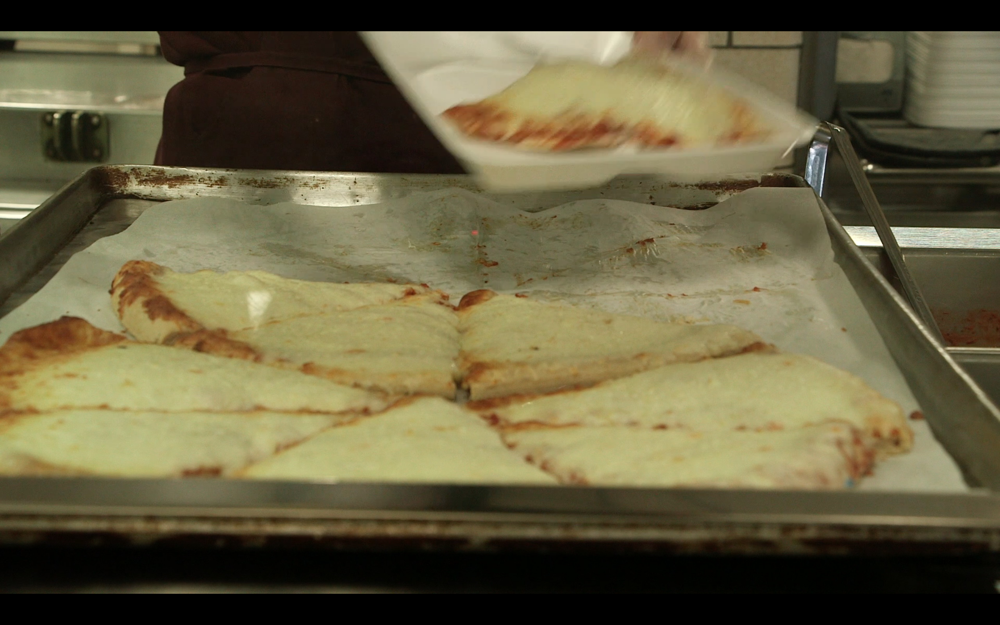
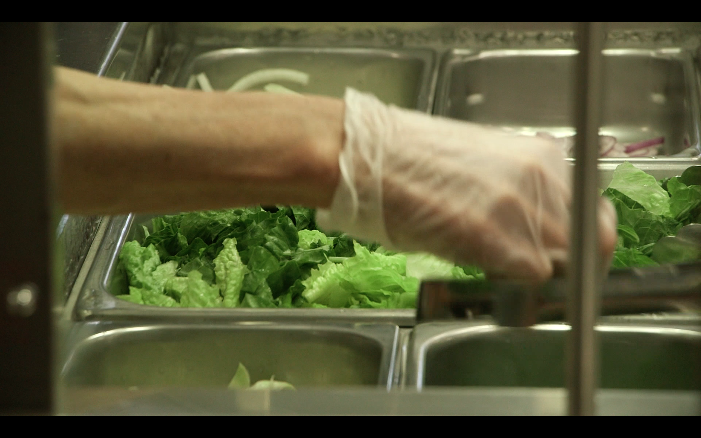

#1 Pizza
No such thing as a free lunch
New York City's new mayor, Bill de Blasio, came to power promising to make school lunches free for all public school children, in a bid to reduce the stigma around the free meals.
But de Blasio's executive city budget, released on May 9, did not include the free school lunch program. According to City Council estimates, it will cost $20-24 million. The mayor said he still wants to implement it, The mayor said the city still had to figure out how to pay for it without jeopardizing federal funding.
#2 Lunch

#3 Salad